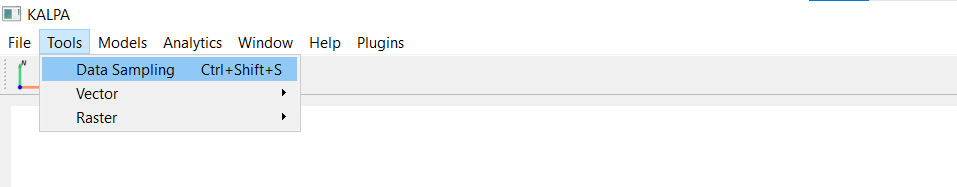
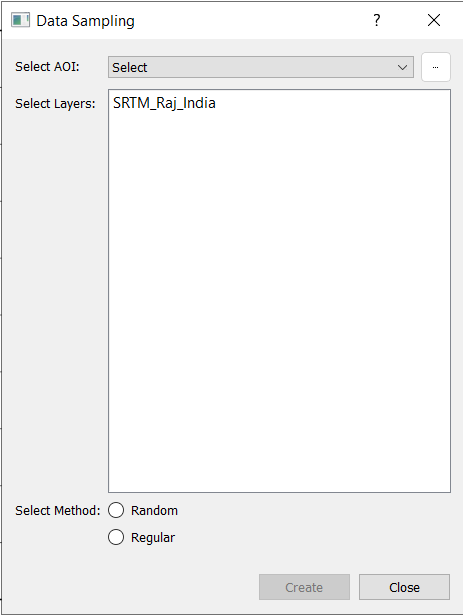

Creating Data for Geodata Engineering and Artificial Intelligence Modeling#
Kalpa makes it easy to prepare datasets for geodata engineering, geostatistics, and machine learning applications. By extracting information from loaded raster and vector layers, you can create structured, machine-trainable datasets tailored to your specific modeling needs. This chapter outlines how to filter, process, and extract data seamlessly.
Overview#
When you load multiple layers of raster and vector data, Kalpa allows you to extract their attributes for further analysis. This process involves creating a grid over a defined area of interest (AOI) and sampling raster values or vector attributes into a new dataset. The sampled data is saved as a vector file (.gpkg) and includes:
Raster Values: Directly sampled at grid points.
Vector Attributes: Selected columns from vector data and their distances to grid points.
For example, if you select a vector column named Fault_Age, the new layer will contain:
A column named
Fault_Age, which stores the sampled attribute value.A column named
Fault_Age_dist, which stores the distance from the grid point to the nearest vector geometry.
Grid Types for Data Sampling#
Kalpa supports two primary gridding approaches to structure the sampling process:
Random Grid - Description: Randomly distributes points across the AOI. - Applications:
Suitable for creating unbiased training datasets for machine learning models.
Reduces spatial autocorrelation in training data, improving generalization.
Benefits: - Provides diverse sampling across the area. - Reduces overrepresentation of specific regions or patterns.
Regular Grid - Description: Creates a grid with uniform spacing based on a specified resolution. - Applications:
Ideal for geodata engineering tasks, such as image processing or geophysical filtering (e.g., upward and downward continuation).
Useful for spatial modeling and interpolation.
Benefits: - Ensures consistent coverage across the AOI. - Facilitates compatibility with raster-based algorithms.
For regular grids, the X and Y resolutions are identical, ensuring a uniform grid layout.
Step-by-Step Guide: Sampling Data#
Accessing the Sampling Tool - Navigate to Tools > Data Sampling to open the data sampling interface.


Defining the Area of Interest (AOI) - You must specify the region where the data will be sampled. You can define the AOI in two ways:
Bounding Box: - Use the Bounding Box Utility to create a rectangular AOI based on an existing raster or vector layer. - Go to Tools > Vector > Bounding Box, select the layer, and save the bounding box layer.
Vector File: - Use a vector file with complex polygon or multipolygon geometries, or point geometries, as the AOI.
Selecting Data Layers - Choose the raster and vector layers from which you want to sample data:
Raster Layers: - Select one or more loaded raster layers to sample values at grid points.
Vector Layers: - Choose vector layers, and a dropdown with checkboxes will appear. You can select specific columns (attributes) from the vector data for sampling.
Choosing a Gridding Method - Select one of the two available gridding methods:
Random Grid: Specify the number of points to generate.
Regular Grid: Set the resolution of the grid.
Creating the Grid and Sampling Data - Click Create to generate the grid and begin sampling data. Wait for the process to complete. A progress bar or notification will indicate the status.


Saving the Sampled Data - After the sampling process finishes, a saving window will appear. You can specify the file name and save the output as a vector file (
.gpkg). This vector file will be added as a new layer in the Layer Panel.
Tips for Effective Data Sampling#
For large datasets, consider using an AOI that reduces the sampling region to save computational resources and time.
When working with machine learning models, using a Random Grid can help reduce sampling bias and improve model performance.
For spatially dense geodata engineering tasks, use a Regular Grid with a resolution that matches the scale of your analysis.